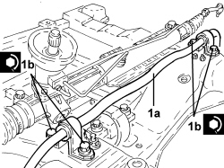

4410C10 FRONT SUSPENSION ANTI-ROLL BAR - R+R - CHECK WHEEL GEOMETRY SEPARATELY
- Path
- Procedures > 44 SUSPENSION AND WHEELS > 4410 FRONT SUSPENSION > 4410C ANTI-ROLL BAR AND ANCHORAGE STRUTS > 4410C10 FRONT SUSPENSION ANTI-ROLL BAR - R+R - CHECK WHEEL GEOMETRY SEPARATELY
- Kind
- repair procedure (removal / refitting; the operation number is the code)
- Applies to
- all engines; all production periods
- Interactive page
- https://sloeber94.github.io/elrnDB-aBrrSpdr/en/#/946002202
Applies to: all engines; all production periods
 Removing
Removing
 Refitting
Refitting- Position the vehicle on a lift.
Op. 4450B12 FRONT WHEELS (TWO) - R+R
Op. 1076B72 INTERMEDIATE EXHAUST PIPE WITH HOSE SECTION - R+R
Op. 4410D10 FRONT SUSPENSION FRAME - R+R
1. Working at the bench, undo the bolts (1a) and remove the anti-roll bar (1b) with joints from the front suspension frame.

Applies to: all engines; all production periods
1. Position the anti-roll bar in a vice with protective jaws, then unscrew the nuts (1a) and remove the front anti-roll bar joints (1b).

Applies to: all engines; all production periods
Refitting
Removing1. Place the front suspension anti-roll bar joints (1a) in their housings and secure them by tightening nuts (1b) to the recommended torque.
Component | Fastening | dia | Value (daNm) | Validity |
|---|---|---|---|---|
Front suspension anti-roll bar joint - anti-roll bar side | Nut | M12 | 9.0 ÷ 11.0 |

Applies to: all engines; all production periods
1. Place the anti-roll bar (1a) in its housing in the front suspension frame and secure it by tightening the bolts (1b) to the recommended torque.
Component | Fastening | dia | Value (daNm) | Validity |
|---|---|---|---|---|
Front suspension anti-roll bar | Front bolt | M8 | 2.2 ÷ 2.6 |
Component | Fastening | dia | Value (daNm) | Validity |
|---|---|---|---|---|
Front suspension anti-roll bar | Rear bolt (to be replaced) | M12 | 7.2 ÷ 8.8 + 90° |

Applies to: all engines; all production periods
Op. 4410D10 FRONT SUSPENSION FRAME - R+R
Op. 1076B72 INTERMEDIATE EXHAUST PIPE WITH HOSE SECTION - R+R
Op. 4450B12 FRONT WHEELS (TWO) - R+R
- Remove the vehicle from the lift.
Topics linked from this page (3)
- 1076B72 INTERMEDIATE EXHAUST PIPE WITH HOSE SECTION - R+R
- 4410D10 FRONT SUSPENSION FRAME - R+R
- 4450B12 FRONT WHEELS (TWO) - R+R